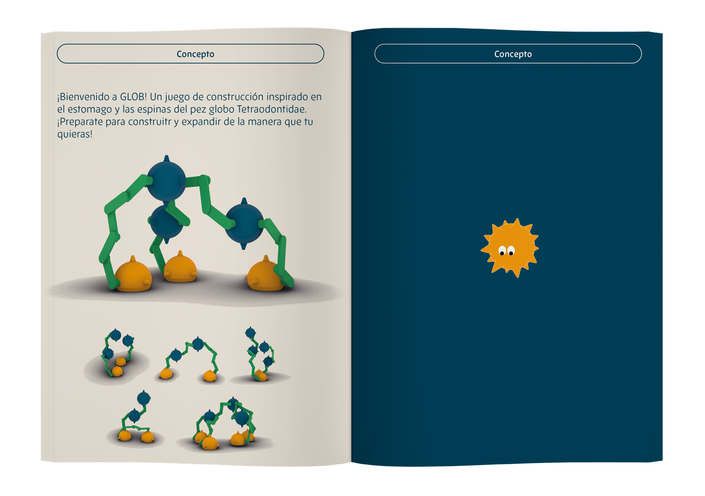

Instrucciones juego “GLOB”
Este libro de instrucciones forma parte del juego GLOB, un juego de construcción que diseñé a partir de una consigna que proponía inspirarse en un animal y traducir su lógica biológica a un sistema lúdico. En este caso, el punto de partida fue el pez globo, específicamente su capacidad de contraerse y expandirse, que se transforma en el eje conceptual y mecánico del juego. El manual no solo explica cómo jugar, sino que acompaña la experiencia de manera clara y visual, detallando las piezas, los tipos de encastre y las posibilidades de movimiento, para que el usuario comprenda el sistema mientras lo explora. La editorial del libro busca ordenar la información técnica sin perder el carácter lúdico, utilizando ilustraciones, esquemas y una paleta coherente con el objeto para reforzar la idea de construcción, expansión y transformación. De esta manera, el libro de instrucciones funciona como una extensión del juego: no solo enseña reglas, sino que comunica el concepto y el origen biológico que estructura toda la experiencia.
2 año - Laboratorio de diseño 3